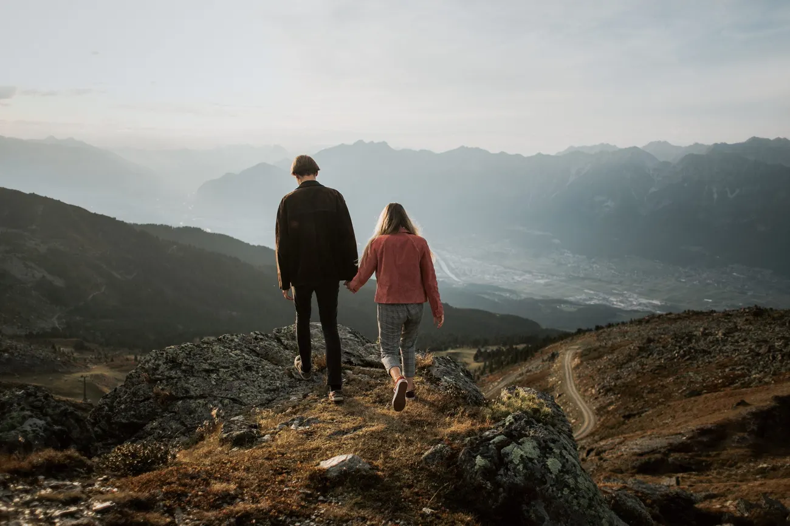
El Tirol es nuestro hogar. Crecimos bajo estas crestas, sabemos qué lago sigue siendo un cristal a las seis de la mañana y qué registro civil os casará con una montaña detrás — y ese conocimiento local es toda la diferencia entre un buen día y uno impecable. Austria hace que fugarse sea sencillo donde más importa: es uno de los pocos lugares de los Alpes donde la boda puede ser a la vez sobrecogedora y legalmente vinculante en la misma montaña. Esta es nuestra guía honesta para hacerlo aquí.
Todo fotógrafo dice que conoce su región. Nosotros nacimos en esta. Andreas es tirolés, en casa entre Innsbruck y los Dolomitas, y eso significa que no llegamos con un mapa y un plan alquilado — os llevamos al prado que caminábamos de adolescentes y a la cresta desde la que vimos ponerse el sol cien veces. Cuando el tiempo cambia, ya conocemos la alternativa resguardada a veinte minutos. Cuando un lago está abarrotado, conocemos el gemelo tranquilo al otro lado del puerto. Eso es lo que de verdad compra lo local: no solo lugares bonitos, sino el correcto, a la hora correcta, pase lo que pase.

Esta es la mayor razón para fugarse en Austria en vez de cruzar la frontera a Italia: podéis casaros legalmente en las montañas. En Italia una boda vinculante solo puede celebrarse dentro de un ayuntamiento, así que toda ceremonia dolomítica es simbólica. Austria es distinta. Un matrimonio civil es sencillo para parejas extranjeras, y varios registros civiles tiroleses celebran la ceremonia legal en un lugar autorizado al aire libre — una orilla, un mirador, una terraza de montaña —, no solo entre cuatro paredes. El acto que de verdad cambia vuestro estado legal puede ocurrir con las cumbres justo ahí.

No es automático en todas partes — cada oficina fija sus propias reglas, fechas y plazos, y las codiciadas citas de verano se agotan pronto. Pero el punto se mantiene: en el Tirol no tenéis que elegir entre una boda de verdad y una boda de montaña. Sabemos qué oficinas dicen sí al aire libre, gestionamos la cita y los documentos, y armamos el día para que los minutos legales y los que importan estén uno al lado del otro, no en dos países distintos.
Hay dos caminos honestos, y ninguno es más romántico que el otro. El primero: completar el matrimonio legal en Austria, en el registro o en un lugar autorizado al aire libre, para que el día en la montaña sea también el día que cuenta. El segundo, que muchas parejas siguen eligiendo por simplicidad: firmar el breve acto legal en vuestro registro civil en casa, y dar a la montaña la ceremonia que de verdad importa — vuestras palabras, vuestros votos, sin funcionario, sin cola. Ambos llevan todo el sentimiento. Os diremos con claridad cuál encaja con vuestro calendario y vuestro papeleo.

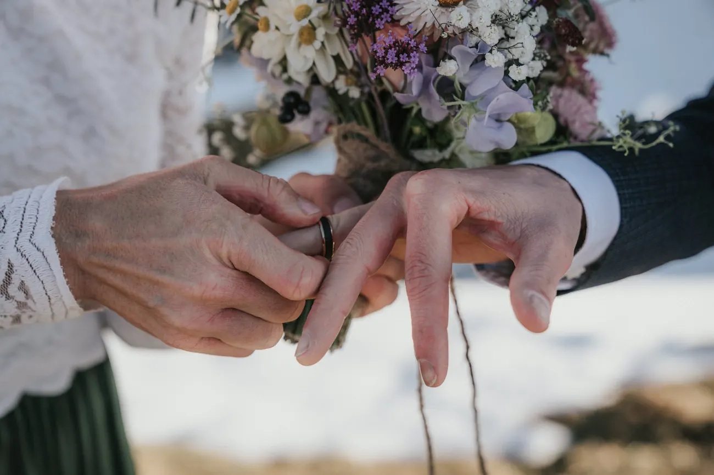
Innsbruck es la única ciudad de los Alpes con una alta montaña a la puerta, y la razón por la que tantos de nuestros días tiroleses empiezan aquí. Desde el casco antiguo, el funicular de la Hungerburg y los teleféricos de la Nordkette os suben al Hafelekar, a 2.256 m, en unos veinte minutos — café bajo los soportales y, poco después, una cresta con todo el valle del Inn tendido abajo y los glaciares del Stubai en el horizonte lejano. Es exposición alpina de verdad alcanzada en el tiempo que se tarda en cruzar una ciudad, lo que la hace perfecta para parejas que quieren escala sin subida, o un final dramático a un día que empezó en un lago.

Una nota honesta sobre la luz: el primer teleférico de la Nordkette sube bastante después del amanecer, así que una verdadera ceremonia del alba en la cresta no está en el menú, salvo que subáis a pie en la oscuridad. No pasa nada — la Nordkette da lo mejor en la mañana clara tras la primera cabina y de nuevo en la larga tarde dorada, y planificamos en torno a esas ventanas para que la cresta esté tranquila y la luz sea suave. Para el amanecer de verdad os llevamos a un lago o a un lugar del valle, y reservamos la cresta alta para las horas en que mejor luce.
El Tirol mantiene sus lagos más tranquilos que los famosos iconos dolomíticos, y ese es justo su regalo. Nuestra lista empieza con el protegido Obernberger See junto al Brennero, una cuenca turquesa poco profunda rodeada de alerces y alcanzable por un paseo suave; el esmeralda Schlegeisspeicher en lo hondo del Zillertal, azul lechoso contra la roca gris; y las pequeñas y quietas lagunas de altura sobre Kühtai que la mayoría de los mapas no nombra. Todos están cerca de Innsbruck y a la vez se sienten en otro mundo, y cada uno está más tranquilo con la primera luz, antes de que llegue el día — que es exactamente cuando planeamos estar ahí.

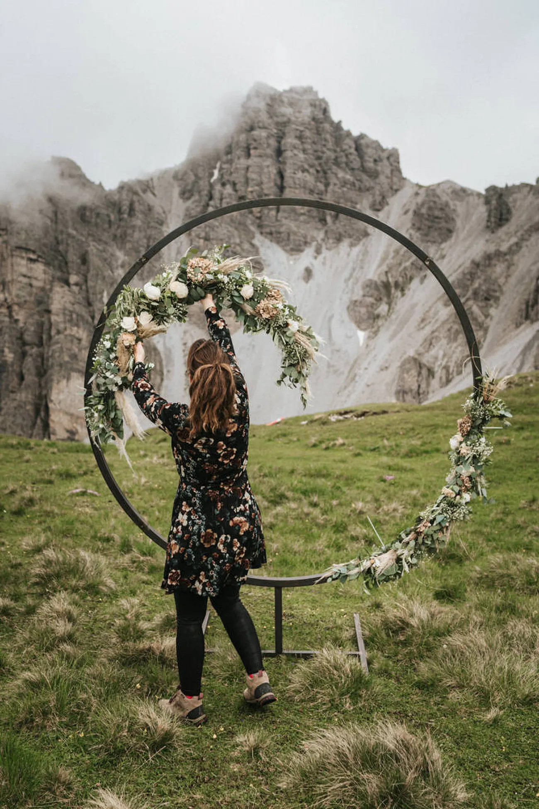
Algunos de los lugares más cinematográficos del Tirol se alcanzan casi por completo en coche, una silenciosa bendición en un día de boda. Dos carreteras de peaje alpinas abren agua turquesa sin caminata: la Schlegeis Alpenstraße en el Zillertal, unos 13 € por coche, sube al azul lechoso embalse del Schlegeis; y las carreteras de altura de Kühtai y del Timmelsjoch os elevan mucho más allá del bosque, a roca desnuda y vistas largas. Salís del coche ya en altura, en vestido o en traje, con el gran escenario justo ahí — y armamos el tiempo para que lleguéis cuando la luz gira, no cuando se llenan los aparcamientos.
Si queréis más que un mirador — si queréis que el día se sienta ganado —, el Tirol tiene crestas que premian una subida corta y honesta con algo que no olvidaréis. Un ascenso desde un remonte o desde un punto de partida como el Birgitzköpfl os pone en terreno expuesto con un horizonte de 360 grados y a vosotros dos diminutos ante él, los encuadres más audaces y más íntimos que hacemos. Nada de esto necesita cuerdas ni guía; necesita buenas botas, un comienzo temprano y alguien que haya caminado la ruta antes. Exploramos cada sendero de antemano, cargamos el plan y las capas de repuesto y lo dosificamos para que la subida sea parte de la aventura, no una tarea.
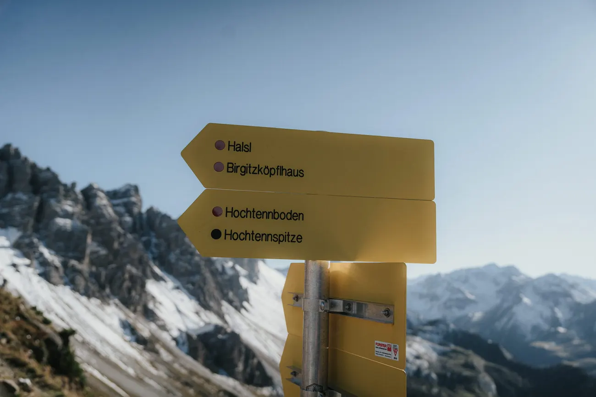
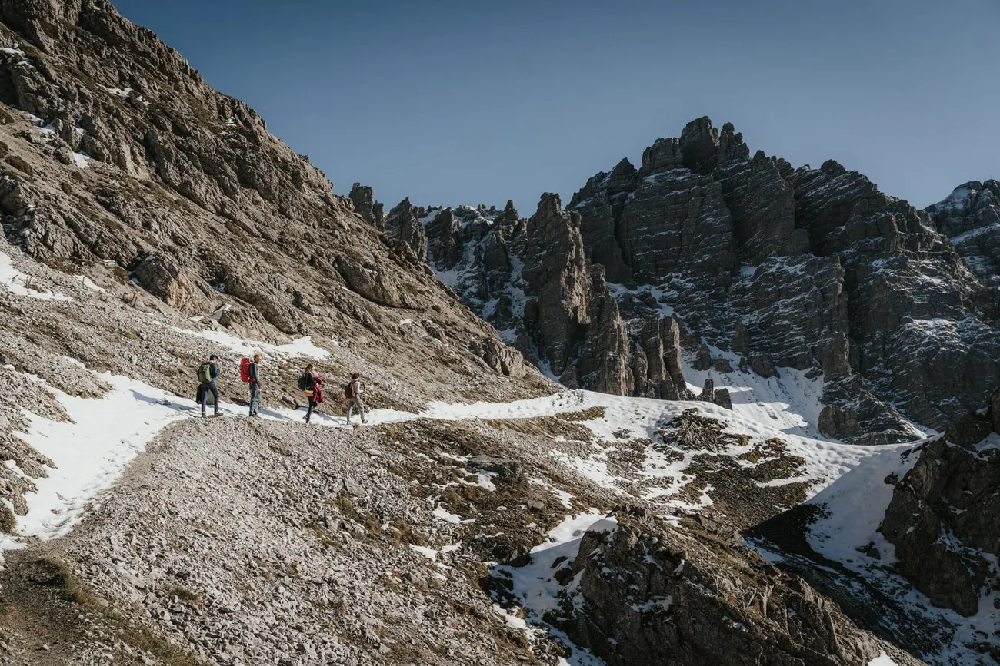
De mayo a octubre es la temporada fiable: los remontes funcionan, las carreteras de altura están abiertas y los prados verdes. Julio y agosto traen el tiempo más cálido y estable y la mayor gente; finales de septiembre es nuestro favorito tranquilo, con los alerces dorándose y las multitudes ralas. Las semanas de transición son una apuesta que vale la pena — podéis tener nieve fresca en las cumbres y senderos vacíos en una misma mañana, y esas son a menudo las mejores fotos del año. El invierno vuelve el Tirol espectacular y silencioso, pero pide un ojo atento a qué carreteras y remontes siguen abiertos.

El Tirol es una de las regiones alpinas más accesibles. Innsbruck tiene su propio aeropuerto a minutos del casco antiguo, y Múnich y Venecia están cada uno a un sencillo trayecto en coche o tren, así que la mayoría de las parejas está bajo una montaña una o dos horas tras aterrizar. La propia Innsbruck es la base ideal — la Nordkette sobre vosotros, el Zillertal y sus lagos a un corto trayecto al este, las carreteras de altura al oeste, y los Dolomitas dos o tres horas al sur para parejas que quieren juntar los dos países en un viaje. Os ayudamos a elegir la base que mantiene vuestros lugares a un cómodo trayecto al alba y os entregamos un plan sencillo para el día.
El día no termina cuando se dicen los votos. Las tardes del Tirol son largas y generosas — el sol bajo rasga las crestas y todo el valle se vuelve dorado, luego rosa, luego la fresca hora azul que la mayoría se pierde por recoger demasiado pronto. Nosotros nunca. Y luego la celebración a juego: un picnic sobre una cálida losa de roca, un brindis con las cumbres tornándose rosas, un lento descenso en la última luz. Una boda de montaña no es un encuadre perfecto al mediodía; es un día entero que sigue dando, hasta el camino de vuelta a casa.


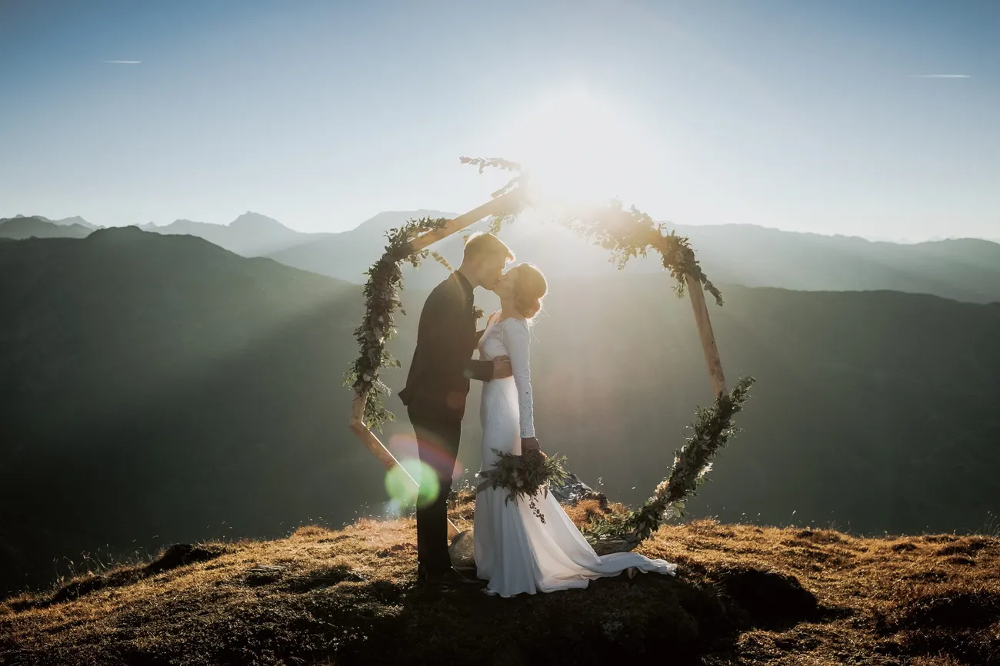
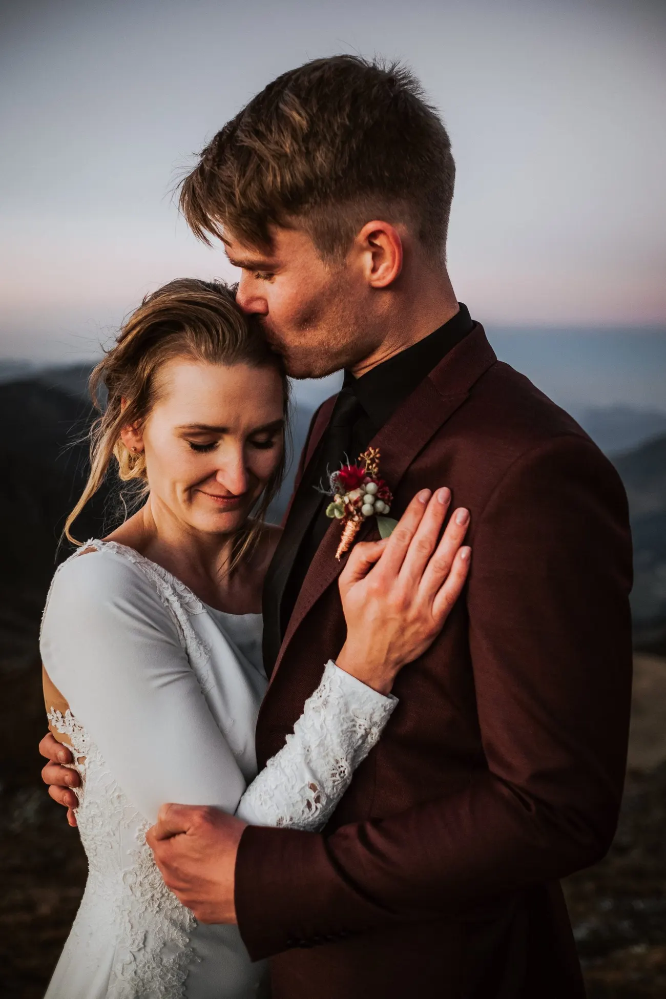
Sí — y esta es la verdadera razón por la que las parejas eligen el Tirol antes que Italia. Austria permite una ceremonia civil legalmente vinculante, y varios registros civiles tiroleses os casan en un lugar autorizado al aire libre, no solo dentro de la oficina. Eso significa que la ceremonia que cuenta sobre el papel puede ocurrir con una montaña detrás. Donde no es posible una cita al aire libre, las parejas firman el breve acto legal en el registro y guardan la ceremonia emocional para la cumbre. Coordinamos la oficina, la fecha y el papeleo en cualquier caso.
En dos cosas: la ley y la gente. En Italia una boda vinculante solo puede ocurrir dentro de un ayuntamiento, así que una ceremonia de montaña dolomítica es siempre simbólica; en Austria el propio acto legal puede trasladarse a la montaña. Y el Tirol simplemente ve menos gente que los famosos iconos dolomíticos — los mismos lagos turquesa y crestas escarpadas, una fracción de la cola. Los Dolomitas quedan dos o tres horas al sur, así que muchas parejas hacen ambos: una mañana legal tirolesa, un atardecer dolomítico un día después.
Ambas cosas son posibles, y lo ajustamos a vosotros. Innsbruck es la única ciudad de los Alpes con una alta montaña a la puerta — los teleféricos de la Nordkette os suben del casco antiguo a 2.256 m en unos veinte minutos, sin caminar. Varios de nuestros lagos tiroleses favoritos están justo al final de una carretera. Y si queréis que el día se sienta ganado, una corta subida por una cresta os pone en un sitio que parece imposible. Nunca exageramos lo que cuesta llegar a un lugar.
De mayo a octubre es la ventana fiable: los remontes funcionan, las carreteras de altura están abiertas y los prados verdes. Julio y agosto dan el tiempo más cálido y estable; finales de septiembre trae alerces dorados y menos gente, y es nuestro favorito tranquilo. Las semanas de transición a cada lado pueden regalaros nieve fresca en las cumbres y senderos vacíos en una misma mañana — algunas de las mejores fotos del año. El invierno es espectacular pero pide un ojo atento a qué carreteras y remontes están abiertos.
Fácil — es una de las regiones alpinas más accesibles. Innsbruck tiene su propio aeropuerto a minutos del casco antiguo, y Múnich y Venecia están cada uno a un sencillo trayecto en coche o tren, así que la mayoría de las parejas está bajo una montaña una o dos horas tras aterrizar. Desde una base en Innsbruck alcanzáis la Nordkette, los lagos del Zillertal y las carreteras de altura sin un largo traslado, y el cruce al sur hacia los Dolomitas es un trayecto sencillo y bello.
Para un matrimonio civil en Austria, las parejas extranjeras suelen necesitar pasaportes válidos, certificados de nacimiento y un certificado de no impedimento para casarse, normalmente con traducciones juradas y, según vuestro país, una apostilla. Cada registro civil fija sus propios plazos y puede pedir algo más, y las fechas de verano se agotan pronto, así que el consejo honesto es empezar unos meses antes. Decidnos desde qué país os casáis y os entregamos la lista exacta y coordinamos directamente con la oficina.
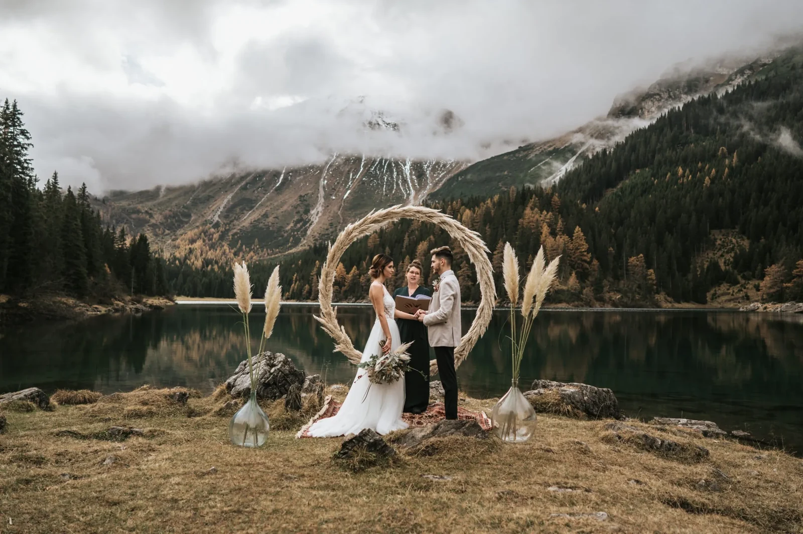
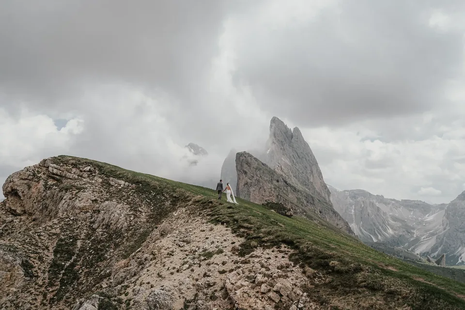
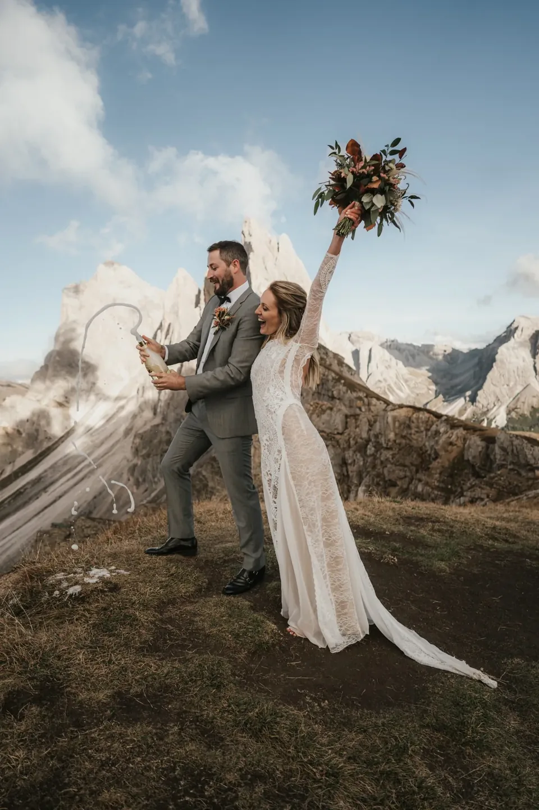
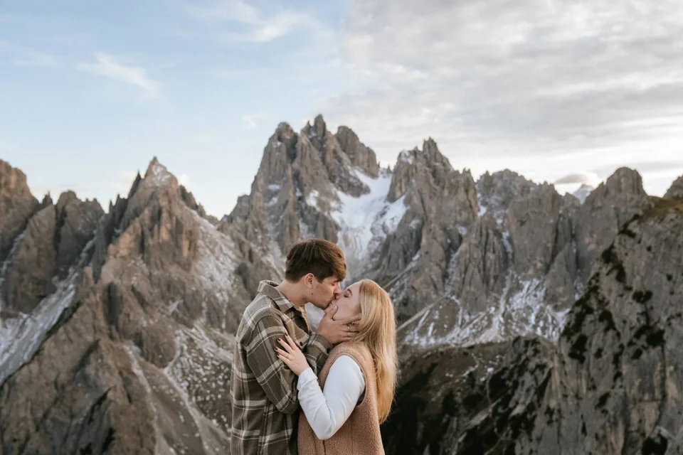
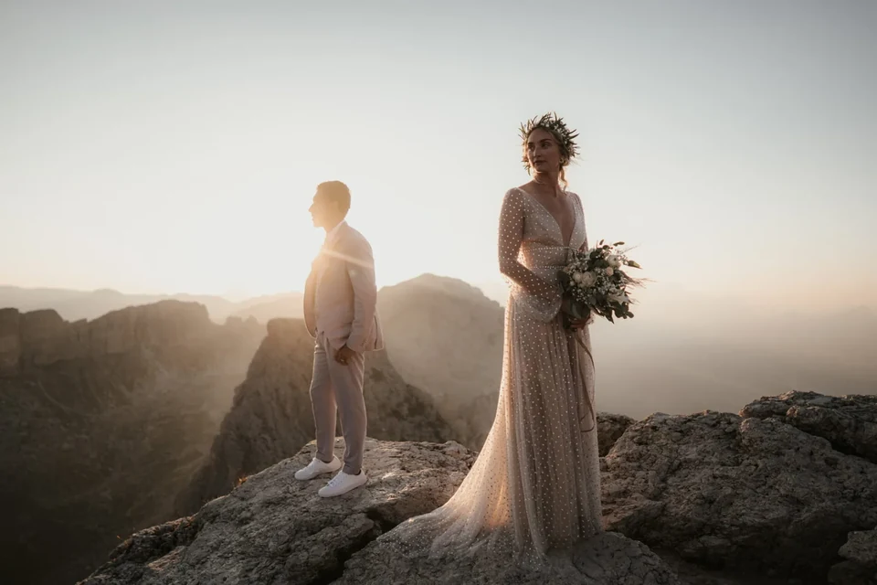
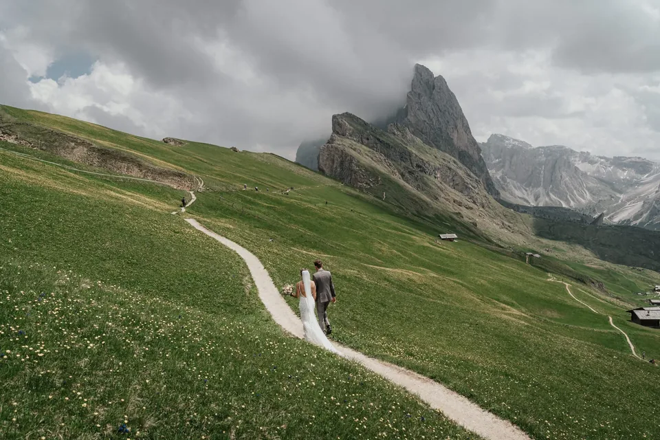
Usamos cookies para estadísticas anónimas (Google Analytics vía Google Tag Manager) para mejorar el sitio. La analítica solo se activa con tu consentimiento. Política de privacidad